linux基本命令学习笔记
基本命令符的含义
- 终端符号含义解释
- mujie 用户名，表示现在进行操作的是mujie这个用户
ubuntu 主机名称，我现在示例的主机是ubuntu
“~“ 指示用户位置，表示家目录[home目录]
Desktop 指示用户位置，表示我现在处于桌面目录中 - 路径的概念
绝对路径：从根目录开始到该目录的全部路径，例如：D:\CTF\boke\mybolg\hexoblog 就是到hexoblog的绝对路径
相对路径：指由这个文件所在的路径引起的跟其它文件（或文件夹）的路径关系，比如我现在如果处于mybolg文件夹中，那么hexoblog和boke两个
相邻路径都是相对与mybolg文件夹的相对路径。 - 命令的格式
 cat是用于查看文件的命令，-b是选项，mu是文件夹名称
cat是用于查看文件的命令，-b是选项，mu是文件夹名称
每个选项格式均为[-选项字母]看情况选择是否添加
选项可连续使用，如ls -alh
linux学习须知
软件包的概念
linux系统的常用软件都储存在数据库中，下载时只是用命令从数据库中下载，所以非常方便。软件源
软件源是指下载软件的数据库，因为linux是国外的系统，所以如果按默认软件源，下载软件的速度会非常感人。所以有时需要将软件源设置到国内的镜像，以提升下载速度。Tab键
快速补齐命令，是linux系统操作是非常常用的按键。还可用于忘记命令时进行提示等操作，
命令笔记
文件的创建&目录切换
文件创建命令
- touch
创建一个文件，例：touch 111.txt 意为创建一个名为111.txt的文件
同时创建多个同级文件，例 touch 111 112 113 114
mkdir
创建一个文件夹，例：mkdir 111 意为创建一个名为111的文件夹
同时创建多个同级目录，例 mkdir 111 112 113 114-p选项
同时创建多个递归目录，例 mkdir -p 111/112/113/114
目录切换命令
- cd
切换目录
cd .. 回到上一级目录
cd . 留在当前目录
cd /切换至根目录
cd -切换至上一次工作路径
cd [目录名] 切换到指定目录，
注：cd 命令相对路径只能一级一级切换，如同图形界面只能一个一个打开文件夹cd命令绝对路径可以直接打开目标文件，无需一级一级切换。
查看文件&文件复制与移动删除
查看文件命令
ls 查看当前目录下的文件
-a选项，查看所有文件，包括隐藏文件。例
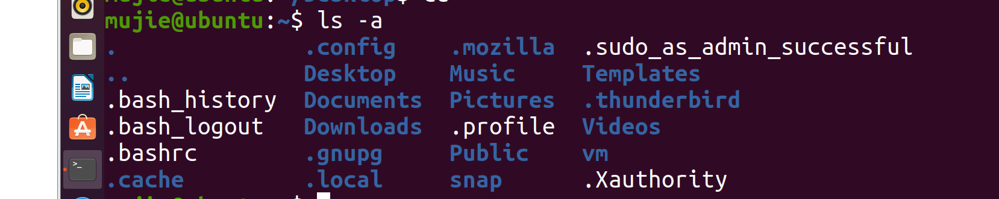其中文件名前有点的为隐藏文件
l选项，查看该目录下文件的详细信息
h选项，使查看到的内容更加人性化
这里直观的看到内存从一些看不懂的数字变为了看的懂的表示方法
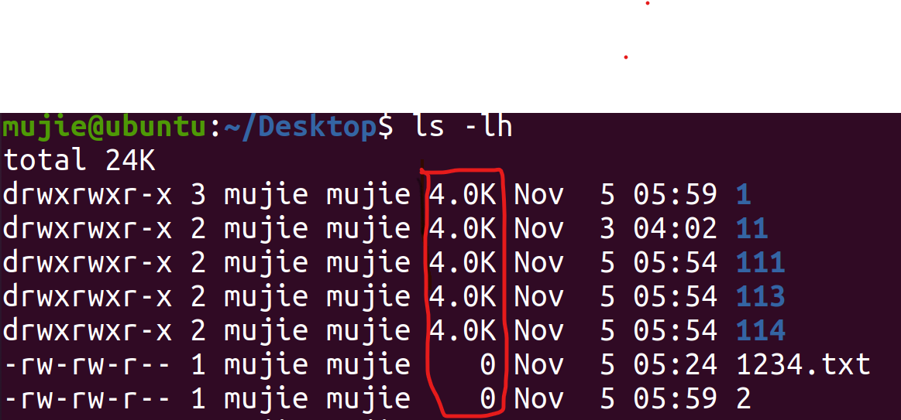
- tree 以树状图的方式查看所在目录下的文件
需要运行命令下载，按终端提示即可
- cat 查看文件内容
- b选项，将查看到的内容输出行号，空行不输出
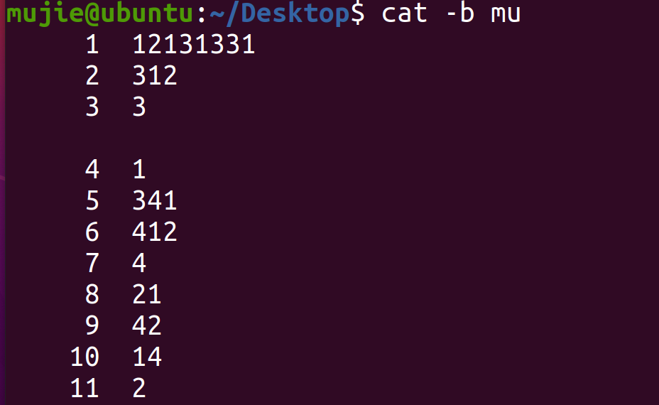 - 如图3行和4行中间无行号
-n选项，输出所有行号，包括空行。
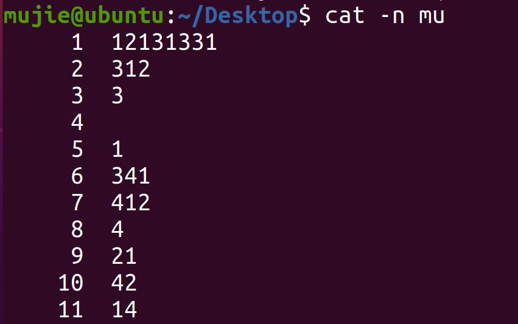如图可见空行也输出了行号
- more 查看文件内容
基本用法同cat类似，但如遇到内容极多的文件，cat命令直接显示至最底部，more从最开始按页显示。
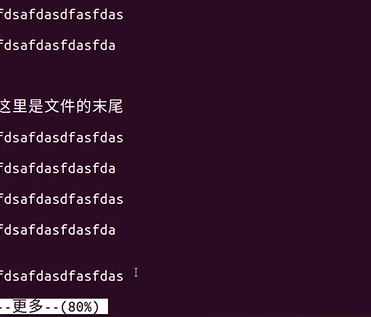 - 按空格一次翻一页
按Enter向下 n 行，需要定义。默认为 1 行
按Ctrl+B后退一页
按Ctrl+F向前一页
按q退出查看 - head 显示文件内容（默认十行）
格式：head [-n 行数] 文件名
head同more一般，可以按页查看 - tail 显示文件后几行，以动态显示
-f选项，表示持续查看文件，直到按Ctrl+C结束 - grep 查看文件
不同于cat和more，grep后接字符可查找指定内容
如grep 11 mu 意为查看mu文件中所有包含11的行 - pwd 查看当前工作路径
文件的复制&移动&删除
cp 复制文件
格式为cp （需复制文件的位置）/[需复制文件的文件名] (复制后文件的位置)/ [复制后文件的文件名]
括号内内容可不选，仅用于从一个大目录到另一个大目录
如cp ./ mu ~/Desktop mi 意为将当前目录下的文件mu复制到桌面，并命名为mi（同一位置不能出现两个同名文件）
-i选项，出现重名文件询问是否覆盖
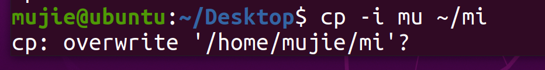mv 对文件重命名或移动文件
在同一目录中操作，如mv mu mi意为将mu文件重命名为mi
移动至其他文件夹夹，格式等同与cp命令但无需移动后文件名，如mv mu ./114意为将m文件mu移动至114文件夹rmdir 删除文件夹
rmdir命令只能删除文件夹，无法删除文件
与创建文件夹命令mkdir对应rm 删除文件
rm 后加文件名可删除文件，但无法删除文件夹r选项，删除文件夹和目录，如rm -r 114是删除114这个文件夹
f强制删除
rf选项，删除且不询问
i选项，删除前逐一询问
注：rm -r命令需谨慎使用，一不小心就会成rm -rf / 删库clear 清空终端页面内容与缓存，超级常用的命令。
用户权限及组管理
用户权限详解
- ls -l 查看页面解释
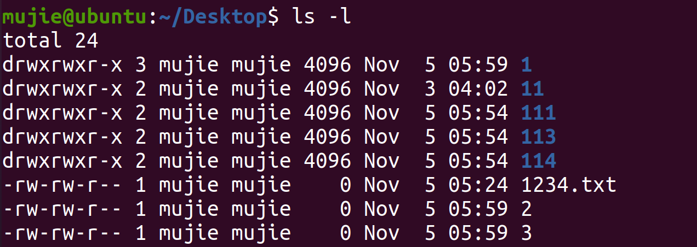
解释顺序从左到右
第一个d(-)说明文件类型，d为文件夹，-为文件
rwxrwxr-x 三位数为一组，从左到右依次为拥有者权限，组权限，其他人的权限
r 可读权限，常用数字4代替
w 可写权限，常用数字2代替
x 可执行权限，常用数字1代替
第一个mujie意为该目录的拥有者（创建者）为用户mujie，对应第一组权限
第二个mujie意为组名称为mujie，对应第二组权限
root权限的获取
- 获取命令
sudo passwd root 获取root权限并设置密码
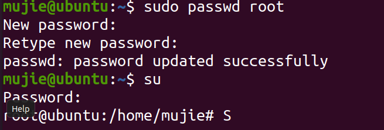
设置后用su（切换用户命令）即可进入root
设置后使用sudo可用root运行后续命令，但只能进入五分钟，超过五分钟需重新输入密码
权限的修改
- chmod 修改文件权限
chmod后常跟权限选项
例：chmod +r 1 给所有用户1文件的可读权限
chmod -r 1 给所有用户取消对1文件的可读权限
r w x 用法均相同
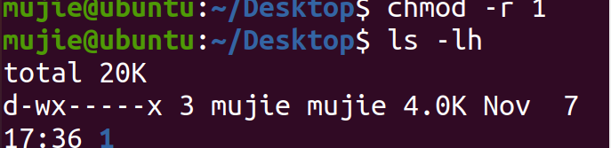 - -指定权限修改
指定修改文件权限用数字表示
-R修改一个目录下所有文件权限
例：chmod -R 777 1
这里7表示权限所对应的数字和，此时为rwx（4+2+1=7）,其他同理
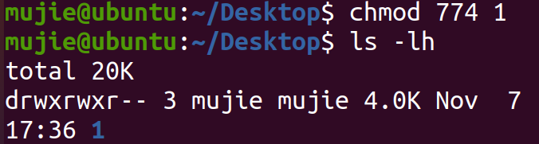
创建组，删除组&查看组，修改文件所属组
创建与删除组
创建组与删除组均为group起头
创建组与删除组均需在root权限下运行或使用sudo命令
- groupadd 创建组
例：sudo groupadd 1234 创建一个名为1234的组 - groupdel 删除组
例：sudo groupdel 1234 删除名为1234的组查看组&修改文件所属组
- 查看组
首先须知，linux中，所有组的信息均储存在etc目录下的group文件中
故，无改动情况下，用任意文件查看命令均可查看
例：cat /etc/group
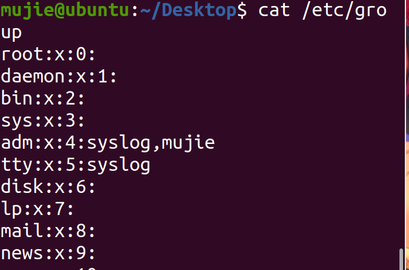 - 修改文件所属组
chgrp
各式：chgrp [修改的目标组] [修改的文件名]
例chgrp 12345 1
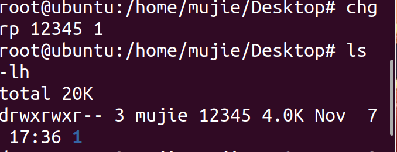如图可见组名从原来的mujie变成了12345
增加与删除用户
useradd 增加用户
-m选项，自动生成该用户的家目录
-g选项，指定用户所在组，否则自动创建与增加用户同名的组
例：sudo useradd -mg zhangsan muyu
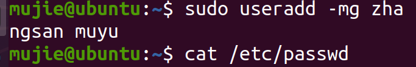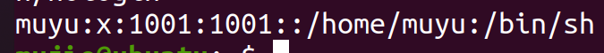
userdel 删除用户
-r选项，同时删除创建的家目录
例：sudo userdel -r muyu
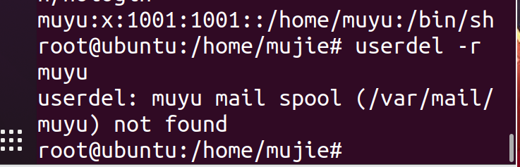注：在linux中，用户数据保存在etc目录下的passwd文件中，查看用户只需要用任意查看命令查看即可
例：cat /etc/passwdpasswd 添加用户的密码
格式：passwd [用户名]
一般每次创建用户后都需要设置密码
例：sudo passwd muyu
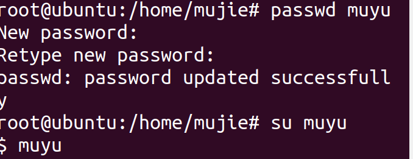切换用户&查看用户信息su 切换用户
只输入su时，默认切换至root用户（管理员用户）
su [用户名] 切换至目标目录，但不会切换至目标文件夹
su - 用户名 切换至目标用户的同时切换至目标用户的家目录文件夹
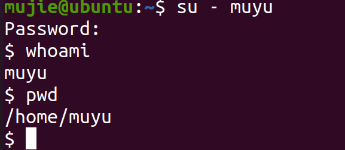who 查看当前登录的用户列表
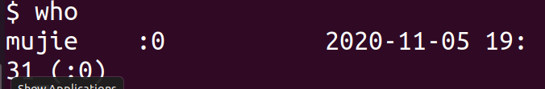如图，表示现在muyu用户只有mujie用户登录whoami 查看当前所在用户
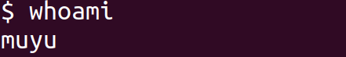
如图表示现在我处于muyu这个用户id 查看当前用户的id
id是用户的识别信息，分为UID和GID。如果说用户名是qq昵称，那id就是账号
UID 用户标识
GID 组标识exit 退出当前用户/返回上一个用户
使用exit可退出当前所在的用户
举个例子，我从mujie用户su进root用户，再从root用户进muyu用户，使用exit命令会使我从muyu用户退出到root用户，而不是退至mujie用户。再从root用户exit，才可退出至mujie用户。
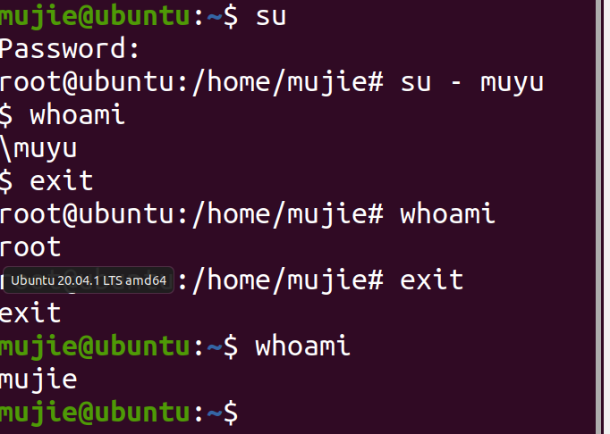
主组与附加组
- 概念
主组：创建用户时设定的组，一般不轻易修改
附加组：创建后添加的组，给主组用户提供附加组的权限，如sudo就是一个附加组，无sudo附加组的用户无法执行sudo命令。 - usermod 修改组
- G 修改附加组
格式：usermod -G [附加组名称] [用户名称]
-g 修改主组
格式：usermod -g [目标主组] [用户名称] - 修改终端显示页面
- s 修改shell(终端显示界面)
格式：usermod -s [目标终端页面路径] [用户名]
例：usermod -s /bin/bash muyu
修改前
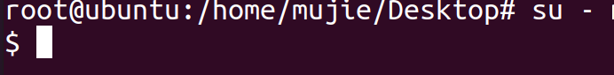 - 修改后：
- 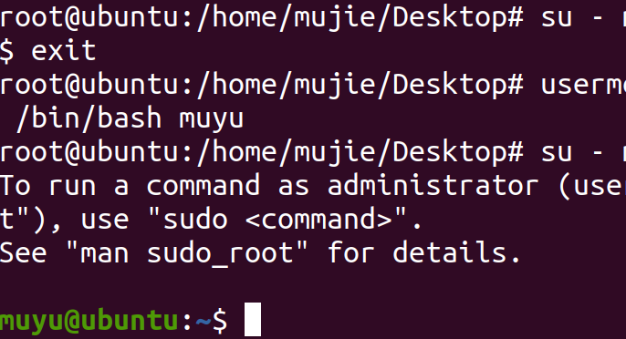
- 可以明显看到页面美化了一层
注：linux中有两中主要的终端界面，分别是dash和bash。一般linux创建用户默认为dash，因为系统觉得这样操作更方便，但dash页面不美观也不易辨识，在输入一些操作指令时会出现重大缺陷，所以有时需要我们根据需要手动修改。
而bash便是我们常用的终端界面，有颜色有位置标识。 - which 查看命令执行文件位置
往往在输入cat /etc/group 查看组位置时容易忘记如etc的目录，所有常需要一个命令查找。
例：which sudo
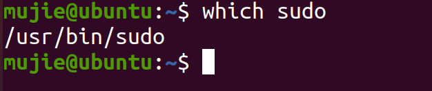
打包压缩与软件安装
打包压缩
-tar 打包命令
格式：tar -cvf [打包后文件名。tar] [要打包的文件]
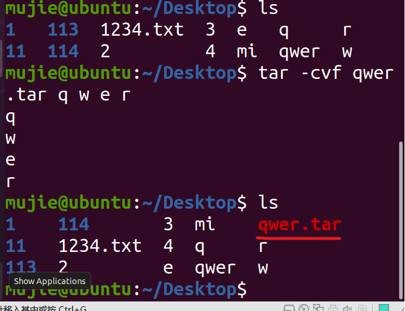 注：打包不是压缩，打包文件名后要加.tar
tar 解包命令
格式：tar -xvf [需解包文件]
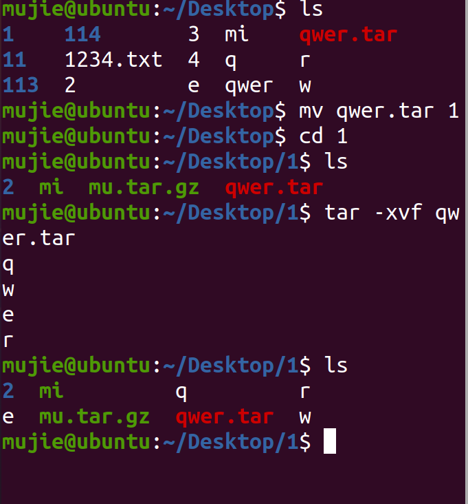c选项，生成档案文件，创建打包文件
v选项，列出归档解档详细进程，显示进度。
f选项，指定档案名称，f后解.tar，所以一定要放在最后。
x选项，解开档案文件
gzip压缩命令
格式：gzip [要压缩的tar文件]
例：gzip qwer.tar
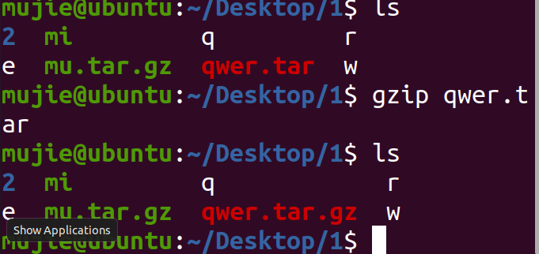bzip2压缩命令
格式同gzip注：gzip和bzip2还有tar一般不单独使用，而是联合使用
gzip代表选项-z
bzip2代表选项-b
故常用的打包压缩命令为 tar -zcvf [压缩包名.tar.gz] [压缩文件名]
故常用的解压缩命令为 tar -zxvf [压缩包名.tar.gz]
bzip2同理
-C选项，指定压缩/解压位置
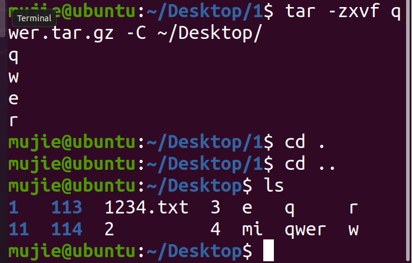
软件安装
- apt install 安装命令
需在sudo下运行
格式：sudo apt install [软件包]
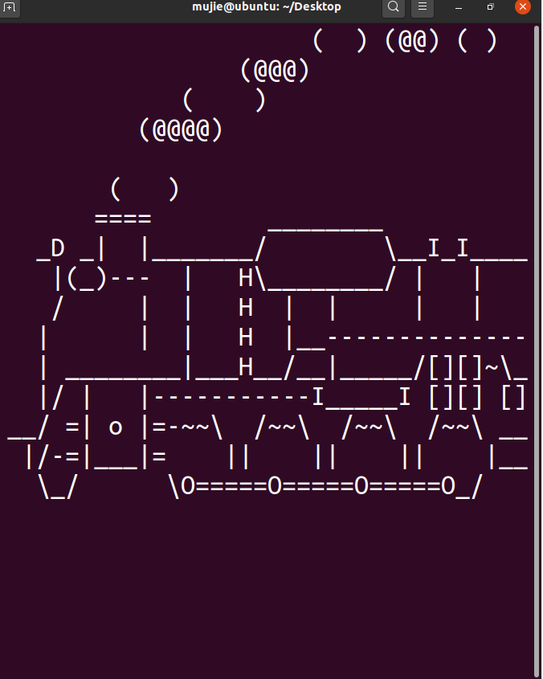
sudo apt install htop 下载htop 效果是让top命令显示的界面更好看。
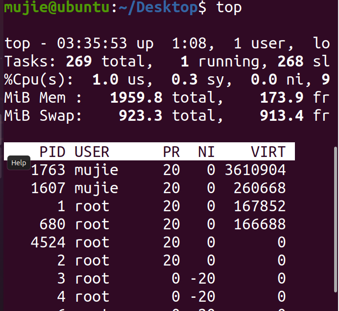 - 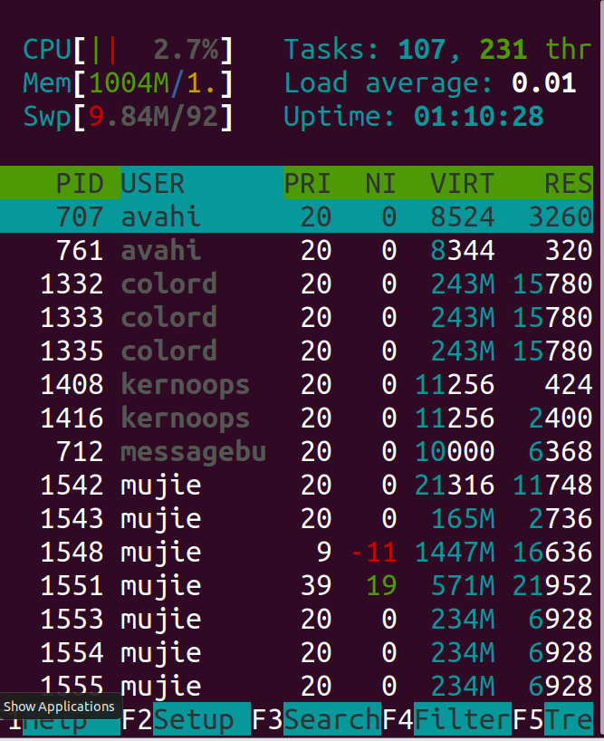
- apt remove 卸载命令
须在sudo下运行
格式：sudo apt remove [软件名]
例：sudo apt remove sl 卸载sl软件 - apt upgrade 升级命令
须在sudo下运行
格式：sudo apt upgrade 自动检查升级并发出更新情求。
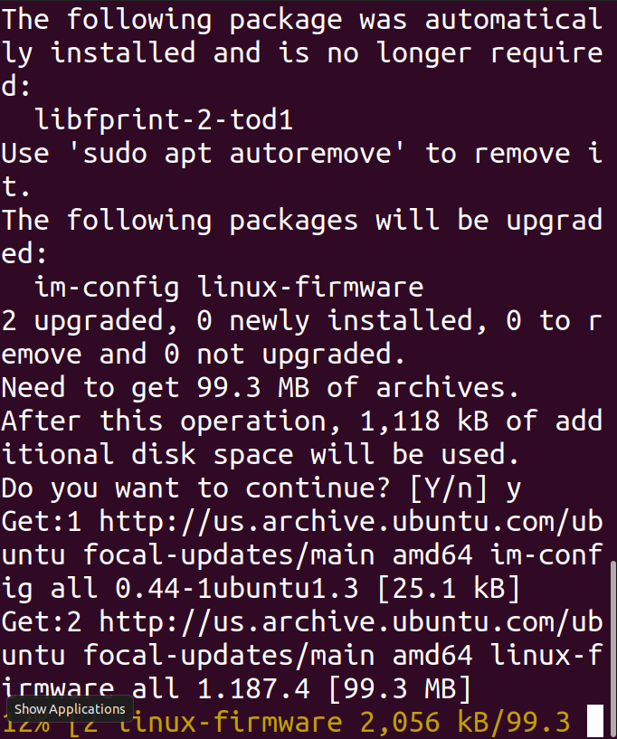
- 设置软件源
设置方法按自己具体版本在百度找方法。
系统信息
date 查看当前时间
- cal 查看日历
-y选项，查看一年的日历
- cal 查看日历
df 显示磁盘剩余空间大小
h使显示内容更人性化
du 显示文件占用空间大小
h使显示内容更人性化
注：du命令后可接具体文件夹查看
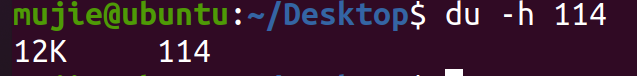ps 查看当前用户通过终端启动的 进程
aux选项，查看正在进行的全部进程，前面-可加可不加
a选项，查看所有进程，包括其他用户进程
u选项，查看进程详细状态
x选项，查看没有终端控制的进程top 动态显示系统所有进程并排序
按q或ctrl+c退出top查看页面，其中显示的页面第一行是进程代码，需要特别关注。kill 关闭/杀死进程
9强制终止进程
格式：kill -9 [进程代码]
远程管理
远程连接的准备工作
- 下载xshell，官网即可下载选学生用免费版即可。
- ifconfig 查看ip地址，在win10主机中IP查看命令为ipconfig。
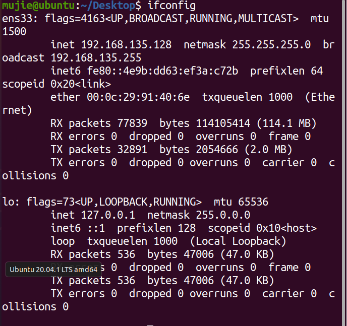
如图，上方ens33对应的inet对应ip地址，用于和网络互通，下方lo对应inet为本机环回地址，用于检查本机网络连接状态。 - ping 测试网络连接量，常用来查看两台主机是否网络互通。
ping通是远程连接的前置条件。
用法：ping [IP地址/网址]
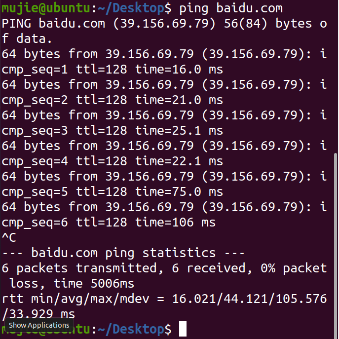 - route -n 查看linux系统网关
- 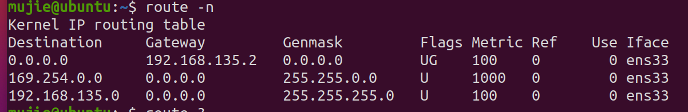
- -n 不解析得到的数字
不加-n时，使用route命令得到的Destination（目的地址）是自动解析为英文的，而当使用-n后，目的地址不会被解析，仍以数字显示。
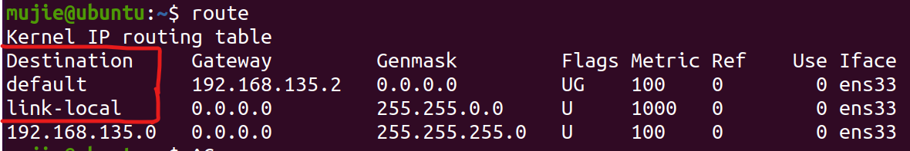
没有使用-n选项，目的地址被解析。
ssh 远程连接命令
格式：ssh [用户名]@[ip地址]
连接成功后即可访问目标主机/服务器（用xshell连接）
-p选项，指定端口位置
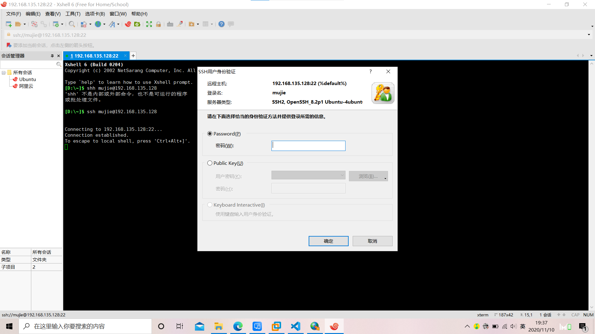
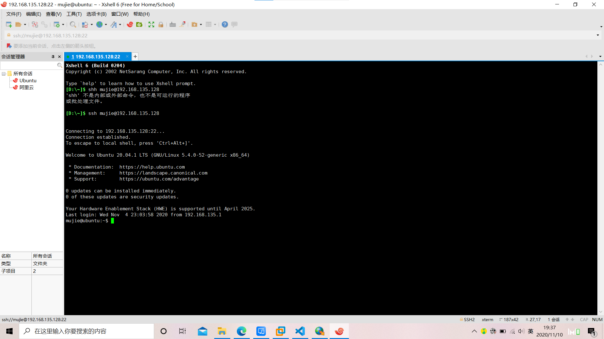
- scp 远程复制
格式：scp [要复制的文件] [用户名]@[IP地址]：[远程复制后文件位置]
scp -P 22 [用户名]@[IP地址]:[要复制的文件地址] [复制后文件地址]
-r选项，可以选择传送文件夹
-P选项，可以指定端口位置
注：ssh命令默认端口为22，非22时需要用-P指定。- 注：Win系统如果无法使用该命令，建议下载xftp进行远程文件复制，无论服务器还是主机都方便快捷。
也可以使用FileZilla进行文件传输，我推荐xftp是因为在官网下载xshell是会同时下载xftp。 - 注意：上传任意文件至ubuntu时，都只能指定目录为tmp ,因为非管理员只对tmp目录有w（可写）权限
- 注：Win系统如果无法使用该命令，建议下载xftp进行远程文件复制，无论服务器还是主机都方便快捷。
- ssh 高级
- ssh信息都储存在.ssh文件中。
- 免密登录
- 公钥配置shh-kengen 一路回车即可
- 公钥上传到服务器
ssh-copy-id -p [端口号] [用户名]@[ip地址]
其他命令
echo （显示指定文字）与>/>>（重定向）
echo命令通常与重定向同用
linux允许将内存追加到文件中
‘>’输出，将终端上的内容输出的文件中，会覆盖文件。
‘>>’追加，在文件后追加终端中输入的内容。
格式：echo [终端内容] > [文件名] 或 echo [终端内容] >> [文件名]‘|’管道
管道是将两个命令同时执行的条件，命令符为“|”
例：cat -n mi | grep 2 将文件mi加行号查看，并选出含有2的行（包括行号）
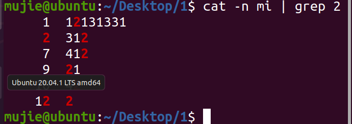软连接与硬链接
- ln 建立硬链接
-s选项，建立软连接
格式：ln -s [文件路径(绝对或相对)]
注：绝对比相对更稳定
软连接与硬链接概念
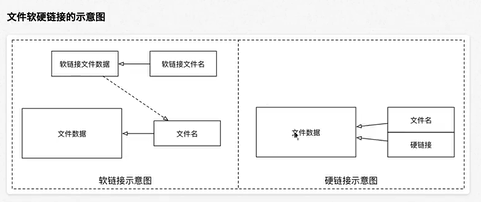
- ln 建立硬链接
man 使用手册
格式：man [命令] 用于记得命令写法却忘记命令用途时，查看命令具体用处。- info 格式用途和man均相同，但info更加详细。
xargs命令
xargs（英文全拼： eXtended ARGuments）是给命令传递参数的一个过滤器，也是组合多个命令的一个工具。
xargs 可以将管道或标准输入（stdin）数据转换成命令行参数，也能够从文件的输出中读取数据。
xargs 也可以将单行或多行文本输入转换为其他格式，例如多行变单行，单行变多行。
xargs 默认的命令是 echo，这意味着通过管道传递给 xargs 的输入将会包含换行和空白，不过通过 xargs 的处理，换行和空白将被空格取代。
xargs 是一个强有力的命令，它能够捕获一个命令的输出，然后传递给另外一个命令。
之所以能用到这个命令，关键是由于很多命令不支持|管道来传递参数，而日常工作中有有这个必要，所以就有了 xargs 命令
find /sbin -perm +700 |ls -l #这个命令是错误的 find /sbin -perm +700 |xargs ls -l #这样才是正确的xargs 一般是和管道一起使用。
参数：
- -a file 从文件中读入作为 stdin
- -e flag ，注意有的时候可能会是-E，flag必须是一个以空格分隔的标志，当xargs分析到含有flag这个标志的时候就停止。
- -p 当每次执行一个argument的时候询问一次用户。
- -n num 后面加次数，表示命令在执行的时候一次用的argument的个数，默认是用所有的。
- -t 表示先打印命令，然后再执行。
- -i 或者是-I，这得看linux支持了，将xargs的每项名称，一般是一行一行赋值给 {}，可以用 {} 代替。
- -r no-run-if-empty 当xargs的输入为空的时候则停止xargs，不用再去执行了。
- -s num 命令行的最大字符数，指的是 xargs 后面那个命令的最大命令行字符数。
- -L num 从标准输入一次读取 num 行送给 command 命令。
- -l 同 -L。
- -d delim 分隔符，默认的xargs分隔符是回车，argument的分隔符是空格，这里修改的是xargs的分隔符。
- -x exit的意思，主要是配合-s使用。。
- -P 修改最大的进程数，默认是1，为0时候为as many as it can ，这个例子我没有想到，应该平时都用不到的吧
vi命令
vi的基本概念
基bai本上vi可分为三种操du作状态，分别是命令模式zhi(Command mode)、插入模dao式(Insert mode)和底线命令模式(Last line mode)，
各模式的功能区分如下：
1. Comand mode：控制屏幕光标的移动，字符或光标的删除，移动复制某区段及进入Insert mode下，或者到Last line mode。
2. Insert mode：唯有在Insert mode下，才可做文字数据输入，按Esc等可回到Comand mode。
3. Last line mode：将储存文件或离开编辑器，也可设置编辑环境，如寻找字符串、列出行号等。
不过可以把vi简化成两个模式，即是将Last line mode也算入Command mode,把vi分成Command 和Insert mode。
vi的基本操作
?进入vi
在系统提示符号输入vi及文件名称后，即可进入vi全屏幕编辑画面：
$ vi testfile
有一点要特别注意，就是您进入vi之后是处于“Command mode”下，您要切换到Insert mode才能输入文字。
初次用vi的用户都会想先用上下左右键移动光标，结果电脑一直叫，把自己气个半死，所以进入vi后，先不要乱动，
转换入Insert后再说。?切换至Insert mode编辑文件在Command mode下按‘i’、‘a’或‘o’三键就可进入Insert mode。
这时候您就可以开始输入文字了。
i: 插入，从目前光标所在之处插入所输入的文字。
a: 增加，目前光标所在的下一个字开始输入文字。
o: 插入新的一行，从行首开始输入文字。
?Insert的切换→Command mode，按Esc键
您目前处于Insert mode，您就只能一直打字。假如您发现打错字了，想用光标键往回移动，将该字删除，
就要按ESC键转换回Command mode，再删除文字。
?离开vi及存文件
在Command mode下，可按冒号“：”键入入Last line mode，例如：
:w filename (输入“w filename”，将文章存入指定的文件名filename)
:wq (输入“wq”，因为进入之时已经指定文件名testfile，所以会写入testfile并离开vi)
:q! (输入“q!”，强制离开并放弃编辑的文件)
Command mode功能键列表
在介绍command mode指令的时后，指令后面加上“常用”字眼的功能键，表示比较常用的vi指令，
请读者您一定要学会、记住。
(1)I、a、o切换进入Insert mode。[超级常用]
(2)移动光标
vi可以直接用键盘上的光标键来上下左右移动，但正规的vi是用小写英文字母h、j、 k、l，分别控制光标左、下、上、右移一格。
按Ctrl+B：屏幕往后移动一页。[常用]
按Ctrl+F：屏幕往前移动一页。[常用]
按Ctrl+U：屏幕往后移动半页。
按Ctrl+D：屏幕往前移动半页。
按 0 (数字零)：移动文章的开头。[常用]
按 G：移动到文章的最后。[常用]
按 w：光标跳到下个word的开头。[常用]
按 e：光标跳到下个word的字尾。
按 b：光标回到上个word的开头。
按 $：移到光标所在行的行尾。[常用]
按 ^：移到该行第一个非空白的字符。
按 0：移到该行的开头位置。[常用]
按 #：移到该行的第#个位置，例：51、121。[常用]
(3)删除文字
x：每按一次删除光标所在位置的后面一个字符。[超常用]
#x：例如，6x 表删除光标所在位置的后面6个字符。[常用]
X：大字的X，每按一次删除光标所在位置的前面一个字符。
#X：例如，20X 表删除光标所在位置的前面20个字符。
dd：删除光标所在行。[超常用]
#dd：例如，6dd表删除从光标所在的该行往下数6行之文字。[常用]
(4)复制
yw：将光标所在处到字尾的字符复制到缓冲区中。
(想在和#x、#X的功能相反)
p：将缓冲区内的字符粘贴到光标所在位置(指令‘yw’与‘p必须搭配使用)。
yy：复制光标所在行。[超常用]
p：复制单行到您想粘贴之处。(指令‘yy’与‘p’必须搭配使用)
#yy：如：6yy表示拷贝从光标所在的该行往下数6行之文字。[常用]
p:复制多行到您想粘贴之处。(指令‘#yy’与‘p’必须搭配使用)
“ayy：将复制行放入buffer a, vi提供buffer功能，可将常用的数据存在buffer
“ap：将放在buffer a的数据粘贴。
“b3yy：将三行数据存入buffer b。
“b3p：将存在buffer b的资料粘贴
(5)取代
r: 取代光标所在处的字符：[常用]
R：取代字符直到按Esc为止。
(6)复原(undo)上一个指令
u：假如您误操作一个指令，可以马上按u，回复到上一个操作。[超常用]
.: .可以重复执行上一次的指令。
(7)更改
cw：更改光标所在处的字到字尾$处。
c#w：例如，c3w代表更改3个字。
(8)跳至指定行
Ctrl+G：列出光标所在行的行号。
#G：例如，15G，表示移动光标至文章的第15行行首。[常用]
Last line mode下指令简介
读者您要使用Last line mode之前，请记得先按Esc键确定您已经处于Command mode下后，再按冒号“：”或“/”或“?”
三键的其中一键进入Last line mode。
1.列出行号
set nu: 输入“set nu”后，会在文章的每一行前面列出行号。
2.跳到文章的某一行
#：井号代表一个数字，在Last line mode提示符号“：”前输入数字，再按Enter就会跳到该行了，
如：15[Enter]就会跳到文章的第15行。[常用]
3.寻找字符串
/关键字：先按/，再输入您想寻找的字，如果第一次找的关键字不是您相尽可能的，可以一直按n会往下寻找到您要的关键字为止。
?关键字：先按?，再输入您想寻找的字，如果第一次找的关键字不是您想要的，可以按n会往前寻找到您要的关键字为止。
4.取代字符串
1，$s/string/replae/g：在last line mode输入“1，$s/string/replace/g”会将全文的string字符串取代为replace字符串，其中1,$s就是指搜寻区间为文章从头至尾的意思，g则是表示全部取代不必确认。
%s/string/replace/c：同样会将全文的string字符串取代为replace字符串，和上面指令不同的地方是，%s和1,$s是相同的功能,c则是表示要替代之前必须再次确认是否取代。
1,20s/string/replace/g：将1至20行间的string替代为relpace字符串。
5.存文件
w：在last line mode提示符号“：”前按w即可将文件存起来。[超常用]
#，# w filename：如果您想摘取文章的某一段，存成另一个文件，可用这个指令#代表行号，例如30,50 w nice,将您正在编辑文章的第30~50行存成nice这个文件。
6.离开
q：按q就离开，有时如果无法离开vi，可搭配“!：强置离开vi，如“q!”
qw：一般建议离开时，搭配w一起使用，如此离开时还可存文件
- 以上摘抄自百度知道
附学长给的图片
笔记来自与后话
- 到这里linux笔记告一段落，我会根据后续的学习不断对笔记进行更新，达到完善的目的。
学习语言和命令在于多练习。而非一味观看。文章和视频各有优缺，按自己需求选择。 - 笔记为学习linux视频与文章后自己的总结，在此附上资料链接
- 视频: linux命令大全，来自b站，讲的很详细
https://www.bilibili.com/video/BV14z4y1Q7Hm?p=1 - 文章： 只介绍了31个常用命令，但每个命令选项齐全
https://www.runoob.com/w3cnote/linux-common-command-2.html
链接后续会随学习加深更新
- 视频: linux命令大全，来自b站，讲的很详细